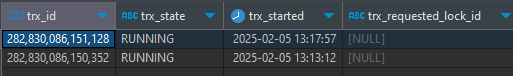

0. 세팅
repeatable read 로 진행
set autocommit =0;
start transaction
commitTest 테이블 생성
create table test2(id int primary key , name varchar(10))
insert into test2 values(1,"a")Trx 확인 명령어
SELECT * FROM information_schema.innodb_trx;TX1, TX2 는 트랜잭션 실행 순서를 의미
- TX1 이 먼저 실행됨을 뜻함
1. MVCC 스냅샷
MVCC에서 “첫 번째 SELECT가 스냅샷을 만든다”라는 의미는 트랜잭션이 시작될 때의 데이터를 기준으로, 필요한 경우 UNDO LOG를 활용하여 과거의 데이터 버전을 복원하는 것을 의미
-
Repeatable read 일 때 트랜잭션에서 첫
select쿼리가 수행될 때 ReadView 를 생성해 (스냅샷) 사용한다. -
ReadView정보를 활용해서 현재 트랜잭션에서 어떤 데이터를 읽을 수 있을지 판단 다음은ReadView구성 요소다.creator_trx_id: 이ReadView를 만든 트랜잭션 IDtrx_ids:ReadView가 생성되는 시점의 활성화 되어 있는 트랜잭션들up_limit_id: 활성화 된 트랜잭션 중 가장 오래된 트랜잭션을 의미한다. 해당 값보다 트랜잭션ID가 큰 레코드는 읽지 않고 작은 데이터만 읽는다.low_limit_id: 활성화 된 트랜잭션 중 가장 최신 트랜잭션을 의미한다. 해당 값보다 트랜잭션ID가 작은 데이터는 모두 읽는다.
undo log를ReadView생성 시점에 고정하게 동작하므로 고정한다 이후부터 통칭함
1.1 tx1 실행, tx2 실행, tx2 update 시 tx1의 undo log
- mvcc 에서 자기 자신보다 tx번호가 낮은
undo log기록은 확인할 수 있다. (이전에 실행된)
1.2 tx1 실행, tx2 실행, tx1 update 시 tx2의 undolog
ReadView가 첫select시점의undo log를 보고 만들어짐을 확인해보기 위한 테스트이다.- 먼저 실행된 tx1 에서
update를 하면 tx2에서select쿼리를 실행 시에 tx1 에서 업데이트 를 확인할 수 있을까?- 만약
ReadView생성 시점의undo log고정해 사용하지 않고 서로 공유한다면, 늦게 실행된 tx2 에서select쿼리 시 tx1의updqte변경 사항을 확인할 수 있을 것
- 만약
1.2.1 tx1 , tx2 select
select * from test2
SELECT * FROM information_schema.innodb_trx;- 각 tx 에서
select쿼리를 실행 후 실행 중인 트랜잭션을 아래의 명령어로 확인하면 다음과 같다.

autocommit을 0 으로 설정 했기 때문이다
1.2.2 tx1 update
update test2 set name="b" where id=1- 쿼리 이후에 트랜잭션을 다시 확인하면 trx_id 하나가 다른값으로 변경되어 있다.
1.2.3 tx2 select
select * from test2- 처음 데이터 와 같은 결과를 반환한다. 이를 통해 ReadView가 생성 시점의 undo log 를 고정해 사용한다는 것을 알 수 있다.
1.2 tx1 실행, tx1 update, tx2 실행 및 select , tx1 commit
- 그렇다면 tx1 이
update후commit은 안한 상태일 때 - tx2가
select를 사용해ReadView를 만들고 - tx1
commit이후 - tx2 의 두번째
select쿼리에서ReadView을잘 사용하는지 확인하고자 함이다.
update test2 set name="b" where id=1- tx1 에서 위의
update쿼리를 수행한다. - 결과는 당연하게도 첫
select쿼리와 같은 값을 반환한다.
1.3 왜 Repeatable Read 에서는 첫 스냅샷을 재사용 하는가
- 이유는
Repeatable Read가Read Commited에서의Non-Repeatable Read문제를 해결하기 위해 사용되기 때문이다. Read Committed에서는 동일한 트랜잭션 내에서도 각 일관된 읽기는 자체의 새로운 스냅샷을 설정하고 읽는 특성이 있다.- 이는
ReadView가select쿼리 시마다 변경됨을 의미하며 - 확인해야 할 undo log 영역도 바뀜을 의미한다.
- 이는
1.4 Read Committed 일때 테스트
Read Commited는 동일 트랜잭션 내 매번 새로운ReadView를 갱신한다.- 이때, 트랜잭션 실행 순서가 영향을 끼치는지에 대한 테스트 이다.
1.4.1 tx1 ,tx2 select -> tx1 update && commit -> tx2 select
- 대표적인
Non-Repeatable Read예제이다. - tx1 에서 다음과 같은
update를 실행 한후 tx2 에서 두번째select를 실행한다.
update test2 set name="d" where id=1
commit;- 잘 알려져 있듯이
Non-Repeatable Read가 발생한다.
1.4.2 tx1 select → tx2 update & commit → tx1 select
- 마찬가지로 tx1 에서 tx2 의 변경사항을 확인할 수 있다.
1.4.3 Read Committed의 Read View 관리 방식
- Read Committed에서도 Read View는 존재하지만, 트랜잭션별로 유지되는 것이 아니라 매번
SELECT시 새로 생성됨. - 따라서
trx_id리스트를 유지할 필요가 없음. - Read Committed에서는 언제나
COMMIT된 최신 데이터를 읽는다.